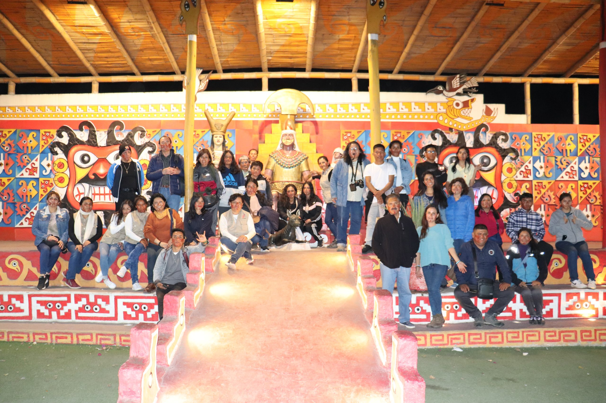
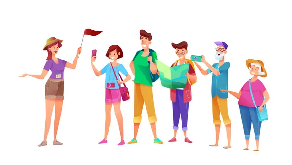
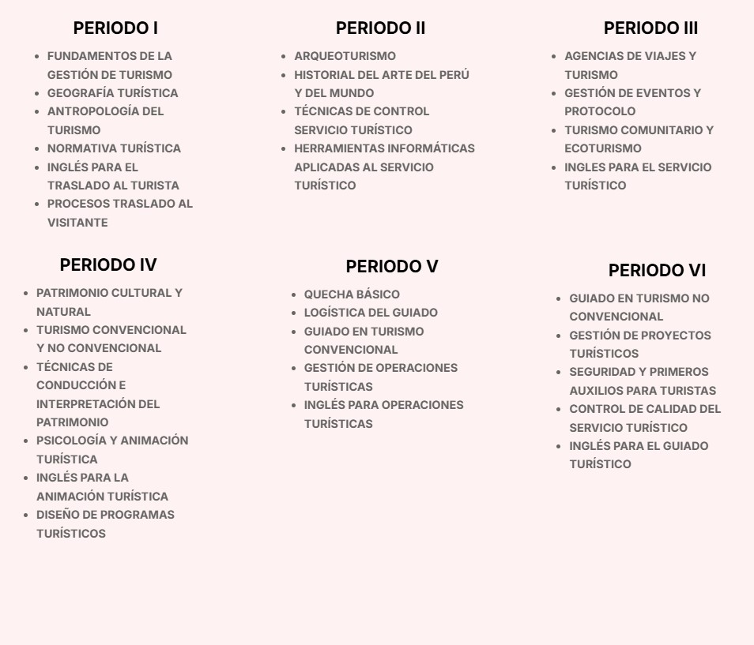

Guía Oficial de Turismo
«Guiar es más que señalar direcciones, es inspirar, educar y enriquecer las experiencias de viaje»
Perfil Profesional
El profesional técnico en Guía Oficial de Turismo planifica, organiza y dirige actividades turísticas, brindando información precisa y fomentando el respeto por el patrimonio natural y cultural. Está preparado para desenvolverse en diversos contextos nacionales e internacionales, promoviendo el turismo sostenible y la experiencia del visitante.
Competencias
- -Guiar grupos turísticos nacionales e internacionales con ética y profesionalismo.
- -Promover el patrimonio cultural y natural de forma didáctica y respetuosa.
- -Gestionar itinerarios, logística y atención al cliente turístico.
- -Aplicar técnicas de interpretación del patrimonio para enriquecer la experiencia del turista.

¿QUÉ SE ESTUDIA EN GUÍA OFICIAL DE TURISMO?
Horario - Guía Oficial de Turismo
| Periodo Académico | Turno Tarde |
|---|---|
| Periodo I | |
| Periodo III | |
| Periodo V |